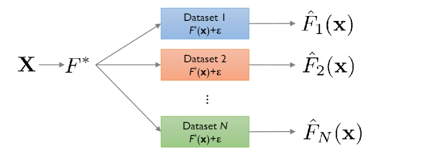

Bias Variancce Tradeoff
Intuition
supervised learning의 목적 중 하나는 unknown data에 대해서generalization을 잘 하도록 모델을 학습시키는 것입니다.- 이는
expected generalization error에 포함하는bias와variance를 줄이도록 학습하는 것과 같습니다.. - 그러나 학습과정에서
bias와variance는 서로간에 상충합니다. - 풀어쓰자면
bias가 작아지면variance는 커지고variance가 작아지면bias가 커지는bias variance tradeoff현상이 나타납니다. - bias와 variance를 조금 구체적으로 살펴보면 다음과 같습니다.
bias
bias는 학습알고리즘에서의 잘못된 가정으로 인해 발생하는오류입니다.High bias는 학습알고리즘이 feature와 target간의regularities를 놓치게 합니다.(underfitting의 원인)- 이는
unknown data에 대해서generalization error가 나오게 합니다.
vairance
variance는 훈련데이터에서의 작은 변동에 학습알고리즘이 민감하게 반응하여 발생하는오류입니다.High variance는 학습알고리즘이 feature와 target간의regularities를 너무 과하게 학습해서 발생합니다.(overfitting의 결과)- 마찬가지로 이는
unknown data에 대해서generalization error가 나오게 합니다.
1번그림
- bias가 작아서 알고리즘이 어떤 방향으로 편향되지 않습니다.
- variance또한 작아서 데이터의 변화에 의한 학습된 알고리즘의 변동,편차는 거의 없습니다.
- 전체적으로 bias,variance가 작기 때문에 학습된 알고리즘은 True값에 가깝습니다.
2번그림
- bias가 크기 때문에 오른쪽 방향으로 편향되어 있습니다.
- variance는 작아서 데이터의 변화에 의한 학습된 알고리즘의 변동,편차는 거의 없습니다.
3번그림
- bias가 작아서 어떤 방향으로 편향되지 않습니다.
- variance는 크기때문에 작은 데이터의 변화에 의한 학습된 알고리즘의 성능변화가 매우 심합니다.
Derivation
Notation
- 위키피디아의 notation과 강의자료 중 notation이 다르고 이외에도 다른부분이 많이 헷갈리기에 notation을 먼저 정리합니다.
- \(F^*(x) = f(x) = f,\hat{F}(x) = \hat{f}(x;D) = \hat{f}\)
- \(\mathbb{E}_D = \mathbb{E}\)
Background
- 통계학에서 데이터는 다음과 같은
additive error model로부터 sampling됩니다.
- \(f(x)\)는 모집단에서 두 변수 \(x,y\)사이의 관계를 대표하는 곡선이며 우리가 학습 알고리즘을 통해 찾고자 하는 target function입니다.
- target function을 찾게되면 우리는 unknown data에 대해서도 좋은 결과를 얻을 수 있습니다.(good generalization)

출처 : Pilsung Kang 교수님 깃허브
- 모집단으로부터 sampling되는 data set에 의해서 같은 알고리즘이라도 다르게 학습이 됩니다.
- 만약 서로다른 data set가 N개가 존재한다면 true function인 \(f(x)\)에 대해 서로다른 N개의 근사값인 \(\hat{f}_1(x),\hat{f}_2(x),\dots,\hat{f}_n(x)\)를 구합니다.
- 개인적으로 각각의 datapoint는 \(p(x,y)\)를 따르므로 dataset \(D\)도 확률변수이며 이로부터 random한 \(\hat{f}(x)\)도 확률변수라고 생각합니다.
Derivation
bias-variance decomposition은bias,variance,irreducible error로 구성되는 학습알고리즘의expected generalization error를 살펴봄으로서 학습알고리즘을 분석하는 방법입니다.